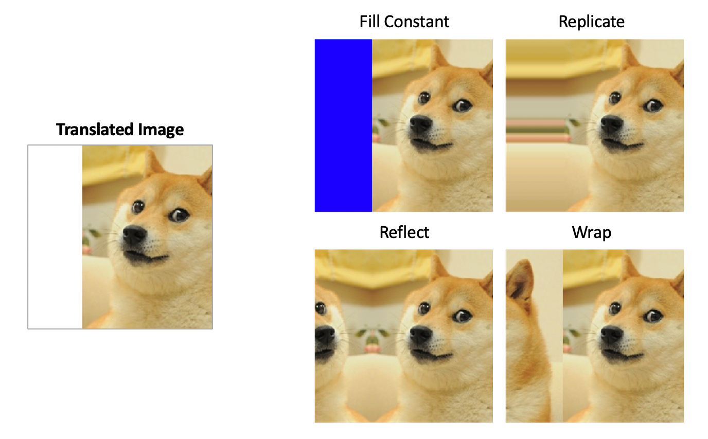

A Deep Dive into U-Net: The Biomedical Image Segmentation Game-Changer

The paper on our reading list is “U-Net: Convolutional Networks for Biomedical Image Segmentation” by Olaf Ronneberger, Philipp Fischer, and Thomas Brox. This 2015 paper from the University of Freiburg introduced an architecture that has become a fundamental tool for anyone working on segmentation tasks, particularly when dealing with limited data.
{kind=link}
Let’s begin where every good paper begins: the Abstract.
Abstract

Let’s dissect it sentence by sentence.
“There is large consent that successful training of deep networks requires many thousand annotated training samples.”
Right from the start, the authors state the core problem they are tackling. In 2015, the deep learning world was dominated by models trained on massive datasets like ImageNet, which has over a million labeled images. The common wisdom was: “more data equals better performance.” However, in specialized fields like biomedical imaging, creating thousands of perfectly annotated images (e.g., outlining every single cell by hand) is incredibly expensive and time-consuming. This sentence sets the stage for a solution tailored to a low-data environment.
“In this paper, we present a network and training strategy that relies on the strong use of data augmentation to use the available annotated samples more efficiently.”
Here is their proposed solution. They have two key components:
- A network architecture: This will turn out to be the “U-Net” itself.
- A training strategy: This is just as important. Their strategy heavily relies on data augmentation. This means taking the few labeled images they have and creating new, slightly altered versions by rotating, stretching, and deforming them. This teaches the network to be robust and effectively multiplies the size of their training set without needing new annotations. The key phrase is “more efficiently.”
“The architecture consists of a contracting path to capture context and a symmetric expanding path that enables precise localization.”
This is the money sentence, the core architectural innovation. They describe their network as having two distinct parts:
- A contracting path (the “down” part of the U): This is a classic convolutional network structure. As the image passes through this path, its spatial dimensions get smaller (it contracts), but its feature channels get deeper. The purpose is to capture context—to understand what is in the image on a broader scale.
- A symmetric expanding path (the “up” part of the U): This is the novel part. This path takes the compressed feature representation and systematically upsamples it, increasing the spatial resolution back to the original image size. Its goal is precise localization—to pinpoint where the features are. The word “symmetric” is crucial, hinting at the U-shape we’ll see in Figure 1.
“We show that such a network can be trained end-to-end from very few images and outperforms the prior best method (a sliding-window convolutional network) on the ISBI challenge for segmentation of neuronal structures in electron microscopic stacks.”
Now for the proof. They claim their network:
- Can be trained from very few images. This directly addresses the problem stated in the first sentence.
- Outperforms the previous state-of-the-art. The previous best method was a “sliding-window” approach, which involved looking at small patches of the image one at a time. This was slow and often failed to capture the larger context. U-Net’s full-image approach is more elegant and, as they prove, more effective.
- Was tested on a real, difficult problem: segmenting neurons in electron microscopy images from the ISBI 2012 challenge.
“Using the same network trained on transmitted light microscopy images (phase contrast and DIC) we won the ISBI cell tracking challenge 2015 in these categories by a large margin.”
They didn’t just beat the old record on one challenge; they showed their architecture is versatile. They used the exact same network on a completely different type of biomedical image (light microscopy vs. electron microscopy) and won another competition, not just barely, but “by a large margin.” This demonstrates the general applicability and power of their design.
“Moreover, the network is fast. Segmentation of a 512x512 image takes less than a second on a recent GPU.”
Performance isn’t just about accuracy; it’s also about speed. They make it clear that their method is practical for real-world use.
“The full implementation (based on Caffe) and the trained networks are available at http://lmb.informatik.uni-freiburg.de/people/ronneber/u-net.”
Finally, they seal the deal by making their work open and reproducible. They provide the code and the trained models, which was a huge factor in the rapid and widespread adoption of U-Net by the research community.
Key Takeaways from the Abstract:
- Problem: Deep learning needs tons of data, but biomedical tasks don’t have it.
- Solution: A U-shaped network architecture combined with aggressive data augmentation.
- Innovation: A contracting path for context, and a symmetric expanding path with skip connections (which we’ll see later) for precise localization.
- Results: State-of-the-art performance on multiple, diverse biomedical segmentation challenges.
- Impact: The method is fast, efficient, and open-source, making it a go-to solution for segmentation.
Now that we have a solid high-level overview, let’s move on to the Introduction section to get more details.
1. Introduction
As we transition from the abstract to the main body of the paper, the authors use the first paragraph of the Introduction to set the scene. They are anchoring their work within the broader context of the deep learning revolution that was in full swing in 2015.
{kind=link}
Let’s break this paragraph down.
“In the last two years, deep convolutional networks have outperformed the state of the art in many visual recognition tasks, e.g. [7,3].”
The paper was published in May 2015. The “last two years” is a direct reference to the period following the groundbreaking success of AlexNet in the 2012 ImageNet competition. The authors cite Krizhevsky et al. [7], which is the AlexNet paper. They are stating a simple, powerful fact: deep learning, specifically Convolutional Neural Networks (CNNs), is the new king of computer vision.
“While convolutional networks have already existed for a long time [8], their success was limited due to the size of the available training sets and the size of the considered networks.”
This is a crucial historical point. The authors correctly note that CNNs were not a new idea. The reference [8] points to Yann LeCun’s seminal 1989 paper on LeNet, which was famously used for handwritten digit recognition. So, if the ideas existed for over two decades, why the sudden explosion in popularity? The paper gives two reasons:
- Limited training sets: There weren’t datasets large and diverse enough to train complex models without severe overfitting.
- Size of the networks: The computational power (primarily GPUs) to train large, deep networks simply wasn’t available or affordable.
“The breakthrough by Krizhevsky et al. [7] was due to supervised training of a large network with 8 layers and millions of parameters on the ImageNet dataset with 1 million training images.”
Here, they explicitly define the “breakthrough.” It wasn’t a single new algorithm but a perfect storm of three things coming together:
- A large network (AlexNet): With 8 layers and millions of parameters, it was much deeper and wider than previous attempts.
- A massive dataset (ImageNet): A curated dataset with over a million high-resolution, labeled images across 1000 categories. This was the “fuel” the network needed.
- Powerful hardware (GPUs): The training of AlexNet was made feasible by using GPUs, which could perform the necessary matrix multiplications much faster than CPUs.
“Since then, even larger and deeper networks have been trained [12].”
The field didn’t stand still after AlexNet. The reference [12] points to the VGGNet paper (Simonyan & Zisserman, 2014), famous for its very deep and uniform 16- and 19-layer architectures. This sentence shows that the dominant trend was “bigger is better”—deeper networks, more parameters, trained on massive datasets.
{kind=link}
{kind=link}
After establishing the “Big Data” paradigm in the first paragraph, the authors now explain why that paradigm fails in the context of biomedical image processing and introduce the prior state-of-the-art method they aim to improve upon.
“The typical use of convolutional networks is on classification tasks, where the output to an image is a single class label.”
This is a direct follow-up to the discussion of ImageNet. In a classification task, the network looks at an entire image (e.g., of a cat) and outputs a single label (“cat”). The spatial information about where the cat is in the image is largely discarded by the end of the network.
“However, in many visual tasks, especially in biomedical image processing, the desired output should include localization, i.e., a class label is supposed to be assigned to each pixel.”
Here, they introduce the core task: semantic segmentation. The goal is not to label the whole image, but to label every single pixel. For example, in a microscopy image, the network must decide for each pixel: “Is this pixel part of a cell, or is it part of the background?” This task requires a fundamentally different kind of network output—an image-sized map of labels, not a single label.
“Moreover, thousands of training images are usually beyond reach in biomedical tasks.”
This is the second, and arguably bigger, problem. They are explicitly stating that the “Big Data” fuel required for models like AlexNet and VGGNet is simply not available. They can’t just download a million annotated cell images. They have to work with what they have, which might be just a few dozen.
“Hence, Ciresan et al. [1] trained a network in a sliding-window setup to predict the class label of each pixel by providing a local region (patch) around that pixel as input.”
Faced with these two problems (localization and scarce data), what was the previous best approach? The authors introduce the work of Ciresan et al. [1], which was a very clever workaround. Their method works like this:
- To classify a single pixel (say, the one at coordinate 100,100), they would crop a small image patch (e.g., 32x32 pixels) centered on that pixel.
- This small patch is fed into a standard classification CNN.
- The CNN’s output is the class label for that single central pixel.
- To create the full segmentation map for the entire image, they would repeat this process for every single pixel by “sliding” the window across the image.
This sliding-window approach is a smart way to re-frame a segmentation problem as a classification problem. As the final sentences of the full paragraph on page 2 state, this method had two major benefits:
- It can localize: By classifying each pixel individually, it produces a dense, pixel-wise output.
- It generates a lot of training data: From a single annotated image, you can extract thousands or even millions of training patches. This artificially inflates the training set size, which helps train the deep network.
And it worked! The authors note that this very network “won the EM segmentation challenge at ISBI 2012 by a large margin.” So, they are not criticizing a failed approach; they are positioning their work as an improvement upon the previous champion.
The Drawbacks of the Sliding-Window Approach
{kind=link}
While the sliding-window technique from Ciresan et al. was the reigning champion, it wasn’t perfect. In this part of the Introduction, the authors highlight two major weaknesses of this method.
“Obviously, the strategy in Ciresan et al. [1] has two drawbacks.”
Let’s look at these drawbacks one by one.
“First, it is quite slow because the network must be run separately for each patch, and there is a lot of redundancy due to overlapping patches.”
This is a critical point about efficiency. Imagine you want to segment a 512x512 image. To classify the pixel at (100, 100), you feed a patch to the network. To classify the very next pixel at (100, 101), you feed a new, slightly shifted patch. This new patch shares a huge number of pixels with the previous one. The network ends up re-computing the same features over and over again for these overlapping regions. This is incredibly wasteful. For a large image, this process could involve hundreds of thousands of individual forward passes through the network, making it very slow.
“Secondly, there is a trade-off between localization accuracy and the use of context.”
This second drawback is about performance and is a bit more subtle. To classify a pixel correctly, the network needs to see the surrounding area, which we call “context.”
- If you want to give the network more context, you need to use a larger patch. But a larger input patch often requires more max-pooling layers in the CNN to bring it down to a manageable size. Max-pooling layers, by their nature, reduce the spatial resolution. This means the network loses the precise “where” information, which hurts localization accuracy.
- If you want to get better localization accuracy, you might use a smaller patch with fewer pooling layers. But now, the network can only see a tiny neighborhood around the pixel. It might not have enough context to make an informed decision. For example, it might see a small curved line and not know if it’s the edge of a cell or just some noise, because it can’t see the rest of the cell.
This creates a difficult trade-off: you can either have good context or good localization, but it’s hard to get both at the same time with this patch-based method.
“More recent approaches [11,4] proposed a classifier output that takes into account the features from multiple layers. Good localization and the use of context are possible at the same time.”
Here, the authors acknowledge that they aren’t the first to recognize this context vs. localization problem. They cite other contemporary works that tried to solve it by combining features from different layers of the network (e.g., combining coarse, high-context features from deep layers with fine, high-localization features from early layers). This sets the stage for them to introduce their own architecture, which they will argue is a more “elegant” way to achieve the same goal. They are essentially saying, “We are building on this idea, but in a better way.”
Introducing the U-Net Architecture
Having laid out the problems with previous methods, the authors now present their solution. They don’t claim to have invented everything from scratch; instead, they build upon an existing, powerful idea: the “fully convolutional network.”
“In this paper, we build upon a more elegant architecture, the so-called “fully convolutional network” [9].”
They position their work as an evolution of the Fully Convolutional Network (FCN), a concept introduced by Long, Shelhamer, and Darrell [9]. An FCN is a network that replaces the final dense (fully connected) layers of a classification network with convolutional layers. This allows the network to take an input image of any size and produce an output map of a corresponding size, making it a natural fit for segmentation. This is a huge leap forward from the slow, patch-based sliding window method.
“We modify and extend this architecture such that it works with very few training images and yields more precise segmentations; see Figure 1.”
This is their key contribution. They’re not just using an FCN; they are adapting it specifically for the biomedical domain, with its dual challenges of scarce data and the need for high precision. Their entire architecture, shown in Figure 1, is designed to meet these needs.
{kind=link}
“The main idea in [9] is to supplement a usual contracting network by successive layers, where pooling operators are replaced by upsampling operators. Hence, these layers increase the resolution of the output.”
This describes the general structure of an FCN, which also forms the basis of U-Net. It has two main parts:
- A contracting network: This is the “encoder” or “downsampling” path. It looks like a typical classification network (e.g., VGG). It consists of repeated convolutions and max-pooling layers. As an image passes through, its spatial dimensions get smaller (it contracts), while the number of feature channels increases. This path is responsible for capturing the context or the “what” of the image.
- An expanding network: This is the “decoder” or “upsampling” path. Here, the process is reversed. Instead of pooling, it uses “upsampling operators” (like transposed convolutions) to increase the spatial dimensions back to the original size. This path is responsible for recovering the “where” information.
“In order to localize, high resolution features from the contracting path are combined with the upsampled output.”
This is the secret sauce of both FCNs and, more critically, U-Net. As the network upsamples in the expansive path, it loses some of the fine-grained spatial information that was present in the early layers of the contracting path. To combat this, FCNs introduced the idea of skip connections.
Look at Figure 1. The gray arrows represent these skip connections. They take the feature maps from the contracting path (left side) and merge them with the feature maps in the expanding path (right side) at the same resolution level.
This is brilliant. It allows the network to combine the deep, abstract, contextual features from the decoder with the shallow, fine-grained, high-resolution features from the encoder. This fusion is what allows the network to produce segmentations that are both contextually aware and spatially precise.
“A successive convolution layer can then learn to assemble a more precise output based on this information.”
After the features from the skip connection are concatenated with the upsampled features, a couple more convolution layers are applied. This gives the network a chance to learn how to best combine the contextual information and the localization information to refine the final output.
U-Net’s Key Modifications and the Overlap-Tile Strategy
{kind=link}
Now that the authors have introduced the general FCN framework, they dive into the specific details that make their U-Net architecture unique and powerful.
“One important modification in our architecture is that in the upsampling part we have also a large number of feature channels, which allow the network to propagate context information to higher resolution layers.”
This is a subtle but crucial difference from the original FCN. In the expansive path (the upsampling part on the right side of the “U”), the network maintains a large number of feature channels. If you look at Figure 1, the number of channels goes from 1024 -> 512 -> 256 -> 128 -> 64. This “high-channel-count” decoder is a key design choice. It means that the network has a high capacity to carry rich contextual information from the bottom of the “U” all the way up to the final output layers, refining it at each step with the help of the skip connections.
“As a consequence, the expansive path is more or less symmetric to the contracting path, and yields a u-shaped architecture.”
This design choice results in the clean, symmetric “U” shape that gives the network its name. Unlike some earlier FCNs where the decoder was much simpler or “thinner” than the encoder, U-Net’s decoder is just as heavy and powerful. This symmetry is a hallmark of the architecture.
“The network does not have any fully connected layers and only uses the valid part of each convolution, i.e., the segmentation map only contains the pixels, for which the full context is available in the input image.”
This is a very important technical detail. Let’s unpack it:
- No fully connected layers: This confirms it’s a “fully convolutional” network, which allows it to work on images of varying sizes.
- “Valid part of each convolution”: The authors use “unpadded” convolutions. When you apply a 3x3 kernel to an image, the pixels at the very edge cannot be the center of the kernel’s receptive field. This means each convolutional layer shrinks the output size by a few pixels. As a result, the final output segmentation map is smaller than the input image tile (e.g., in Figure 1, a 572x572 input produces a 388x388 output). They do this to ensure that every pixel in the output map was predicted using the full context from its receptive field in the input image, with no need for padding assumptions (like zero-padding).
But this creates a new problem: if the output is smaller than the input, how do you segment a whole, large image without losing the edges? This leads to their next clever idea.
“This strategy allows the seamless segmentation of arbitrarily large images by an overlap-tile strategy (see Figure 2).”
Here is their solution for handling large images that won’t fit into GPU memory and for dealing with the shrinking output size. Instead of feeding the whole image at once, they break it down into overlapping tiles.
{kind=link}
As Figure 2 beautifully illustrates:
- To predict the segmentation for the central yellow region, the network needs to see a larger input region (the blue box).
- The network processes the blue input tile and produces a valid segmentation map for the smaller yellow area.
- To segment the next part of the image, they feed the network another tile that overlaps with the first one.
- By stitching together the valid central parts of the predictions from all these overlapping tiles, they can form a complete, seamless segmentation map for the entire large image.
“To predict the pixels in the border region of the image, the missing context is extrapolated by mirroring the input image.”
What happens when you are at the very edge of the full image? The blue input tile would hang off the edge, meaning there’s missing context. Their solution is simple and effective: they mirror the image content at the border to fill in the missing data. This is often a better strategy than filling with zeros or noise, as it provides a more plausible continuation of the image structures.
“This tiling strategy is important to apply the network to large images, since otherwise the resolution would be limited by the GPU memory.”
This final sentence ties it all together. The overlap-tile strategy is not just an elegant way to handle the “valid convolution” border issue; it’s a practical necessity. High-resolution biomedical images can be enormous. This strategy allows U-Net to process them in manageable chunks, making it a highly scalable and memory-efficient solution.
To understand this, let’s first quickly review how a convolution works with and without padding.
Standard (“Same”) Convolution with Padding
Imagine a 5x5 image and a 3x3 convolution kernel (or filter).
- To calculate the output for the top-left pixel (A): The 3x3 kernel needs to be centered on it. But the kernel hangs off the edge of the image! There are no pixels to the left or above.
- The Solution: Padding. The most common approach is to add a border of zeros (or some other value) around the image. This is called zero-padding.
- The Result: With a 1-pixel border of padding, the kernel can now be centered on the original top-left pixel. The output image size remains the same as the input (a 5x5 input produces a 5x5 output). This is often called a “same” convolution.
The Problem with Padding: You are essentially making up data at the edges. The network’s prediction for the border pixels is based on these artificial zeros, which might not be a good representation of what’s actually beyond the image border. This can lead to less accurate predictions at the edges.
U-Net’s (“Valid”) Convolution without Padding
The U-Net authors chose a different approach. They use unpadded convolutions, often called “valid” convolutions.
- How it works: The kernel is only applied where it fully overlaps with the input image.
- For the top-left pixel (A): You can’t center the 3x3 kernel on it without going off the edge. So, you simply don’t calculate an output for that position.
- The first valid position: The first place you can center the kernel is on pixel (B). This is the first pixel that has a complete 3x3 neighborhood.
- The Result: The output image is smaller than the input. A 5x5 input, convolved with a 3x3 kernel, produces a 3x3 output. Each convolution shrinks the image.
The Benefit of this Approach: Every single pixel in the output map (the 3x3 grid) was calculated using only real, valid pixels from the input. Its prediction is based on a “full context” from its receptive field, with no made-up padding data. This leads to higher-quality, more reliable predictions within that valid area.
This is precisely why U-Net’s output in Figure 1 (388x388) is smaller than its input (572x572). The size difference is the cumulative effect of all the unpadded convolutions in the network.
We understand why the U-Net input tile (blue box in Figure 2) must be larger than the output prediction area (yellow box) due to valid convolutions. But what happens when that blue box itself is at the absolute edge of the entire, large image you’re trying to segment?
Let’s visualize this. The large rectangle is your entire microscopy image. The blue box is the input tile we need to feed the network.
Imagine a part of the blue input tile required by the network falls outside the actual image. There are no pixels there. We have “missing context.” What do we fill that gray area with?
Here are a few options and why U-Net’s choice is smart:
Zero-Padding (Bad Option): We could fill the missing area with black pixels (zeros). But this creates a harsh, artificial black edge. If the network sees this sharp line, it might incorrectly learn that objects always end abruptly at black borders, leading to poor segmentation right at the edge of the image.
Wrap-Around / Tiling (Okay Option): We could take the pixels from the far-right side of the image and place them in the missing left side. This is sometimes used, but it can create unnatural seams if the content on the right and left edges is very different.
Mirroring (U-Net’s Smart Option): This is the solution the authors chose. You take the pixel data near the border and reflect it, as if there were a mirror at the edge of the image.

Image source: Complete Guide to Data Augmentation for Computer Vision by Olga Chernytska
Why is Mirroring Better?
Biomedical images often contain continuous structures (like cell membranes, nerve fibers, etc.). Mirroring provides a much more plausible and natural continuation of these structures into the missing context area. The network sees a smooth transition that looks like a real reflection, rather than a jarring artificial edge (like with zero-padding). This helps the network make a much more accurate prediction for the pixels right up to the image border, preventing ugly edge artifacts in the final stitched-together segmentation map.
Training Strategy: Data Augmentation and Weighted Loss
{kind=link}
A great network architecture is only half the battle. To achieve state-of-the-art results, especially with limited data, a clever training strategy is essential. The U-Net authors introduce two powerful techniques to solve key problems in biomedical segmentation.
1. Solving Scarce Data with Elastic Deformations
“As for our tasks there is very little training data available, we use excessive data augmentation by applying elastic deformations to the available training images.”
The authors return to the core problem: not enough training data. Their solution is “excessive data augmentation.” This means they take their few annotated images and generate a vast number of new, slightly different training examples on the fly. While simple augmentations like rotation, scaling, and shifting are common, the authors highlight a particularly powerful technique for their domain: elastic deformations.
Imagine the training image is printed on a sheet of rubber. An elastic deformation is like randomly pushing and pulling on points of that rubber sheet, causing smooth, local distortions.
{kind=link}
Image source: Complete Guide to Data Augmentation for Computer Vision by Olga Chernytska
“This allows the network to learn invariance to such deformations, without the need to see these transformations in the annotated image corpus.”
This is the goal of data augmentation. The network is shown so many slightly warped versions of the same cell that it learns what a “cell” looks like in general, ignoring the specific wiggles and stretches. It learns to be invariant to these changes. This is incredibly important in biology.
“This is particularly important in biomedical segmentation, since deformation used to be the most common variation in tissue and realistic deformations can be simulated efficiently.”
Why elastic deformations? Because this is exactly what biological tissue does! When tissue is sliced and prepared for microscopy, it often stretches, shrinks, and deforms in non-rigid ways. By simulating this exact type of variation during training, they are teaching the network to be robust to the most common type of “noise” found in real-world biomedical data. It’s a perfectly tailored form of data augmentation.
2. Solving Touching Objects with a Weighted Loss
“Another challenge in many cell segmentation tasks is the separation of touching objects of the same class; see Figure 3.”
{kind=link}
This is a classic and very difficult problem in cell segmentation. When two cells are right next to each other, it’s very hard for a network to figure out where one ends and the other begins. Often, it will just merge them into one large blob. The goal is to teach the network to predict the very thin background border that separates them.
“To this end, we propose the use of a weighted loss, where the separating background labels between touching cells obtain a large weight in the loss function.”
This is an elegant solution. The loss function is what tells the network how “wrong” its prediction is. A standard loss function treats every pixel equally. If the network misclassifies a pixel in the middle of a cell, the penalty is the same as misclassifying a pixel on the border between two cells.
The authors propose a weighted loss. They pre-compute a weight map where the pixels corresponding to these crucial, thin borders between touching cells are given a much higher weight (importance).
This means that if the network gets a border pixel wrong, it is penalized much more heavily than if it gets a “normal” background or foreground pixel wrong. This forces the network to pay special attention to learning these subtle separations, effectively teaching it to “carve out” the boundaries between touching objects.
2. Network Architecture
{kind=link}
In this section, the authors provide a detailed, technical breakdown of the U-Net architecture, referencing the now-famous diagram from Figure 1. Let’s walk through the components of the “U” step by step.
“The network architecture is illustrated in Figure 1. It consists of a contracting path (left side) and an expansive path (right side).”
This is the high-level summary. The architecture is an encoder-decoder style network. The left side (encoder) compresses the image into a rich feature representation, and the right side (decoder) expands this representation back into a full-resolution segmentation map.
The Contracting Path (Encoder)
“The contracting path follows the typical architecture of a convolutional network. It consists of the repeated application of two 3x3 convolutions (unpadded convolutions), each followed by a rectified linear unit (ReLU) and a 2x2 max pooling operation with stride 2 for downsampling. At each downsampling step we double the number of feature channels.”
This describes the building block of the encoder. Each “step” or “level” down the U consists of:
- Two 3x3 Convolutions: These layers extract features from the input. As noted before, they are unpadded, which causes the feature map to shrink slightly at each application.
- A ReLU Activation: This is a standard non-linear activation function (
f(x) = max(0, x)) that follows each convolution. - One 2x2 Max Pooling: This operation takes 2x2 pixel windows and keeps only the maximum value, effectively reducing the height and width of the feature map by half. This is the “contracting” or “downsampling” step.
This block is repeated four times. And with each downsampling step, they double the number of feature channels (from 64 -> 128 -> 256 -> 512 -> 1024). This is a common and effective design pattern: as the spatial resolution decreases, the feature complexity (depth) increases. The network learns simpler features (like edges) at high resolution and more complex, abstract features at low resolution.
The Expansive Path (Decoder)
“Every step in the expansive path consists of an upsampling of the feature map followed by a 2x2 convolution (“up-convolution”) that halves the number of feature channels, a concatenation with the correspondingly cropped feature map from the contracting path, and two 3x3 convolutions, each followed by a ReLU.”
This describes the building block of the decoder, which mirrors the encoder. Each “step” up the U consists of:
- An “Up-convolution”: This is a 2x2 transposed convolution. It’s a learned upsampling layer that doubles the height and width of the feature map while halving the number of channels.
{kind=link}
Image source: What is Transposed Convolutional Layer?
- Concatenation (The Skip Connection): The upsampled feature map is then concatenated with the corresponding feature map from the contracting path. This is the crucial step where high-resolution detail is reintroduced.
- Cropping: The feature map from the contracting path needs to be cropped before concatenation. Why? Because of the unpadded convolutions. The feature maps on the left are slightly larger than the ones on the right at the same level. Cropping ensures they have matching dimensions.
- Two 3x3 Convolutions: Just like in the encoder, these layers (followed by ReLU) further process and refine the combined features.
The Final Layer
“At the final layer a 1x1 convolution is used to map each 64-component feature vector to the desired number of classes. In total the network has 23 convolutional layers.”
After the final upsampling step, the network has a feature map with 64 channels. To get the final segmentation map, a single 1x1 convolution is applied. This layer acts like a mini fully-connected network for each pixel, mapping the 64-channel feature vector to the final number of classes (e.g., 2 classes: “cell” and “background”). The total depth of the network is 23 convolutional layers.
A Note on Tiling
“To allow a seamless tiling of the output segmentation map (see Figure 2), it is important to select the input tile size such that all 2x2 max-pooling operations are applied to a layer with an even x- and y-size.”
This is a subtle but important implementation detail. Since the max-pooling layers halve the dimensions, if you feed them a feature map with an odd dimension (e.g., 57x57), the output will be 28x28, and you’ll lose a row/column of information. To avoid this, the input tile size must be chosen carefully so that at every stage of the contracting path, the feature maps have even dimensions. The 572x572 input size shown in Figure 1 is an example of a size that satisfies this constraint.
3. Training
{kind=link}
This section covers the nitty-gritty details of the training process, including the optimization method, the choice of batch size, and the all-important loss function.
“The input images and their corresponding segmentation maps are used to train the network with the stochastic gradient descent implementation of Caffe [6].”
This sets the foundation. The network is trained using Stochastic Gradient Descent (SGD), which was the standard workhorse optimizer for deep learning at the time. They also mention they are using the Caffe deep learning framework, one of the popular choices in 2015 alongside frameworks like Theano and Torch.
Batch Size vs. Tile Size
“Due to the unpadded convolutions, the output image is smaller than the input by a constant border width. To minimize the overhead and make maximum use of the GPU memory, we favor large input tiles over a large batch size and hence reduce the batch to a single image.”
This is a key strategic decision driven by the network’s architecture and hardware limitations. Let’s break down this trade-off:
- Large Batch Size: In typical deep learning, you show the network a “batch” of multiple images at once (e.g., 32 or 64 images) and average the gradients. This helps stabilize the training process.
- Large Input Tiles: U-Net works best when it can see a large section of an image at once. This provides more context for its predictions. A larger tile also means the “wasted” border area (due to valid convolutions) is a smaller percentage of the total input, making computation more efficient.
Given the limited memory on a GPU, you can’t have both. You can either have a large batch of small images or a small batch of large images. The U-Net authors chose the latter: they use a batch size of one but make the single input image (tile) as large as possible.
“Accordingly we use a high momentum (0.99) such that a large number of the previously seen training samples determine the update in the current optimization step.”
Using a batch size of one can make training updates noisy and unstable. To counteract this, they use a very high momentum value (0.99) in their SGD optimizer. Momentum helps smooth out the updates by incorporating a running average of past gradients. With such a high value, the current update is heavily influenced by the last several training samples, effectively simulating the stabilizing effect of a larger batch size.
The Loss Function: Pixel-wise Softmax with Cross-Entropy
“The energy function is computed by a pixel-wise soft-max over the final feature map combined with the cross entropy loss function.”
This describes how the network’s error is calculated. It’s a standard approach for multi-class segmentation.
- The final layer of the U-Net outputs a feature map where, for each pixel, there is a feature vector. For a 2-class problem (cell vs. background), this would be a 2-element vector for each pixel.
- The softmax function is applied to the feature vector of each pixel independently. Softmax converts the raw output scores into a probability distribution. For a given pixel, it might output
[0.9, 0.1], meaning there is a 90% probability it belongs to class 1 (cell) and a 10% probability it belongs to class 2 (background). - The cross-entropy loss then measures the difference between this predicted probability distribution and the true label (the ground truth). If the true label for that pixel was class 1 (
[1.0, 0.0]), the loss would be low. If the true label was class 2, the loss would be high.
“The cross entropy then penalizes at each position the deviation of
p_l(x)(x)from 1 using Ε = ∑ w(x) log(p_l(x) (x))”
The formula provided is for the weighted cross-entropy loss, which we discussed earlier. The key components are:
p_l(x)(x): The predicted probability of the correct class for the pixel at positionx. The network wants to make this value as close to 1 as possible.log(...): The logarithm function heavily penalizes small probabilities. If the network is very sure but wrong (e.g., predicts 0.01 for the correct class), the log of that value is a large negative number, resulting in a very high loss (penalty).w(x): This is the crucial weight map. Each pixel’s contribution to the total loss is multiplied by this weight. As we will see later, thisw(x)is what allows the network to focus on the important borders between touching cells.
Dissecting the Loss Function: The Weight Map
We previously saw the formula for the weighted cross-entropy loss: Ε = ∑ w(x) log(p_l(x) (x)). Now, the authors explain exactly how the weight map w(x) is constructed. This map is the key to solving two major problems: class imbalance and separating touching cells.
“We pre-compute the weight map for each ground truth segmentation to compensate the different frequency of pixels from a certain class in the training data set, and to force the network to learn the small separation borders that we introduce between touching cells (See Figure 3c and d).”
The weight map w(x) has two components, which are added together. Let’s look at the formula they provide on page 5:
w(x) = wc(x) + w0 * exp( - (d1(x) + d2(x))^2 / (2σ^2) )
wc(x): The Class Balance Weight. In most microscopy images, the background pixels vastly outnumber the foreground (cell) pixels. This is called class imbalance. A naive network could achieve 90% accuracy by simply predicting “background” for every pixel. To prevent this,wc(x)assigns a higher weight to the rarer class (the cells), forcing the network to pay equal attention to them. It balances the importance of the classes.w0 * exp(...): The Cell Separation Weight. This is the really clever part, designed to solve the “touching cells” problem. Let’s break down its components:d1(x): For any given background pixelx, this is the distance to the border of the nearest cell.d2(x): This is the distance to the border of the second nearest cell.- The Intuition: A pixel is only in the thin gap between two touching cells if its distance to the nearest cell (
d1) AND its distance to the second nearest cell (d2) are both very small. If a pixel is just near one isolated cell,d1will be small, butd2will be large, making the sumd1 + d2large. - The Gaussian Function: The
exp(...)term is a Gaussian function. It gives a very high weight only when the sumd1 + d2is small. This creates a “ridge” of high importance along the narrow valleys between cells. The parametersw0(set to 10) andσ(around 5 pixels) control the height and width of this ridge.
This weighted loss function brilliantly forces the network to focus its learning power on the most challenging parts of the image: correctly identifying the under-represented cells and, most importantly, learning the subtle borders that separate them.
The Importance of Good Weight Initialization
“In deep networks with many convolutional layers and different paths through the network, a good initialization of the weights is extremely important. Otherwise, parts of the network might give excessive activations, while other parts never contribute.”
Before training starts, the network’s weights (the parameters in the convolution kernels) must be set to some initial random values. The choice of these initial values is critical. If they are too large, the signals passing through the network can explode in value, making learning impossible. If they are too small, the signals can vanish to zero, and the network won’t learn at all. This is the “vanishing/exploding gradient” problem. A good initialization scheme ensures that the signal flows smoothly through all 23 layers of the network.
“For a network with our architecture (alternating convolution and ReLU layers) this can be achieved by drawing the initial weights from a Gaussian distribution with a standard deviation of
sqrt(2/N), where N denotes the number of incoming nodes of one neuron [5].”
The authors use a state-of-the-art initialization method from a 2015 paper by He et al. [5] (often called “He initialization”). The core idea is to set the variance of the weights based on the number of inputs to the neuron.
N(Number of incoming nodes): This is the size of the filter multiplied by the number of input channels.- Example from the paper: For a 3x3 convolution operating on a layer that has 64 feature channels,
N = (3 * 3) * 64 = 576. - The standard deviation for the initial weights would then be
sqrt(2 / 576).
This specific formula is tailored for networks that use ReLU activation functions and helps ensure that the activations throughout the network have roughly unit variance at the beginning of training, leading to a much more stable and effective learning process.
3.1 Data Augmentation
Data augmentation is the secret sauce that allows U-Net to train on “very few annotated images.” The authors explain that for their specific domain, it’s not just about creating more data, but about creating the right kind of data to teach the network about the specific challenges of microscopy images.
“Data augmentation is essential to teach the network the desired invariance and robustness properties, when only few training samples are available.”
The goal is to teach the network invariance. An “invariant” network recognizes an object (like a cell) no matter how it is presented. It should be robust to changes in position, rotation, brightness, and shape. By showing the network thousands of synthetically altered images during training, it learns to ignore these variations and focus on the true underlying features of a cell.
“In case of microscopical images we primarily need shift and rotation invariance as well as robustness to deformations and gray value variations.”
The authors identify the key variations present in their data:
- Shift and Rotation: A cell can appear anywhere in the image and at any orientation.
- Gray value variations: Changes in lighting or staining can alter the brightness and contrast of the image.
- Deformations: As mentioned before, tissue can stretch and warp during preparation.
“Especially random elastic deformations of the training samples seem to be the key concept to train a segmentation network with very few annotated images.”
They emphasize again that elastic deformations are the most critical augmentation technique for their task. This is what truly simulates the physical properties of biological tissue and teaches the network to handle the non-rigid shape variations that are so common in this domain.
How Elastic Augmentation Works
“We generate smooth deformations using random displacement vectors on a coarse 3 by 3 grid. The displacements are sampled from a Gaussian distribution with 10 pixels standard deviation. Per-pixel displacements are then computed using bicubic interpolation.”
This describes their implementation in more detail:
- Imagine a coarse 3x3 grid is laid over the training image.
- At each of the 9 points on this grid, a random displacement vector is generated (i.e., the point is told to move a random amount in a random direction). The “10 pixels standard deviation” means these movements are typically small but can occasionally be larger.
- This creates a warped grid.
- A smooth bicubic interpolation is then used to figure out where every single pixel in the original image should move to, based on the movements of the coarse grid points.
This process results in a smoothly and randomly warped version of the original training image and its corresponding segmentation mask. By generating a new random deformation for every single training step, the network effectively never sees the exact same image twice.
Implicit Augmentation with Drop-out
“Drop-out layers at the end of the contracting path perform further implicit data augmentation.”
Finally, they mention using dropout. Dropout is a regularization technique where, during training, a random fraction of neurons are temporarily “dropped” or ignored. This is typically done in the deepest part of the network (at the bottom of the “U”).
While its main purpose is to prevent overfitting by stopping neurons from co-adapting too much, it also acts as a form of “implicit” data augmentation. It forces the network to learn redundant representations and become more robust, as it cannot rely on any single feature to be present. It’s another piece of the puzzle that helps the U-Net generalize well from a small training set.
4. Experiments
After detailing the architecture and training methodology, the authors demonstrate U-Net’s effectiveness on three challenging biomedical segmentation tasks. This section is all about the results.
Task 1: Segmentation of Neuronal Structures in EM Images
“The first task is the segmentation of neuronal structures in electron microscopic recordings. An example of the data set and our obtained segmentation is displayed in Figure 2.”
The first test is on a famously difficult dataset from the ISBI 2012 EM (Electron Microscopy) segmentation challenge. The goal is to segment neuronal cell membranes from a stack of images of a fruit fly’s brain. This is a binary segmentation task: each pixel must be classified as either “membrane” (black in the ground truth) or “not membrane” (white).
- Training Data: The dataset is extremely small by deep learning standards: just 30 images, each 512x512 pixels.
- Evaluation: The test set is public, but the ground truth is secret. Participants submit their predicted membrane probability maps to the organizers, who then calculate several error metrics: “warping error,” “Rand error,” and “pixel error.” Lower is better.
The Results
“The u-net (averaged over 7 rotated versions of the input data) achieves without any further pre- or postprocessing a warping error of 0.0003529 (the new best score, see Table 1) and a rand-error of 0.0382.”
This is a powerful statement.
- Averaging: They use a simple test-time augmentation trick: they get predictions on the original image and 7 rotated/flipped versions, then average the results. This often improves robustness.
- No pre- or post-processing: Many competitive methods rely on complex steps to clean up the data before feeding it to the network (pre-processing) or to refine the network’s raw output (post-processing). The authors highlight that U-Net achieves its results without any of these extra steps, showcasing the raw power of the architecture itself.
- New Best Score: U-Net sets a new state-of-the-art record on the leaderboard for warping error, which was a key metric for this challenge.
Let’s look at Table 1 to see the comparison.
{kind=link}
The table shows the leaderboard from March 6th, 2015.
“This is significantly better than the sliding-window convolutional network result by Ciresan et al. [1], whose best submission had a warping error of 0.000420 and a rand error of 0.0504.”
This is the direct comparison they were building towards since the introduction. U-Net (rank 1) soundly beats the previous best method from Ciresan et al. (IDSIA, rank 3), which was based on the sliding-window approach. This proves that their “more elegant,” fully convolutional architecture is not just faster and more efficient, but also more accurate.
“In terms of rand error the only better performing algorithms on this data set use highly data set specific post-processing methods¹ applied to the probability map of Ciresan et al. [1].”
They honestly note that some other methods achieve a slightly better Rand error (e.g., IDSIA-SCI and DIVE-SCI). However, they point out (in a footnote on page 7) that these methods rely on very complex and dataset-specific post-processing steps. This reinforces their claim that U-Net’s raw performance is superior, even without these extra bells and whistles.
Task 2: Cell Segmentation in Light Microscopy Images
After demonstrating success in electron microscopy, the authors pivot to show U-Net’s versatility. They apply the exact same architecture to a cell segmentation task using light microscopy images, which have very different visual characteristics.
“We also applied the u-net to a cell segmentation task in light microscopic images. This segmenation task is part of the ISBI cell tracking challenge 2014 and 2015 [10,13].”
This time, the data comes from the ISBI Cell Tracking Challenge. The goal is to segment individual cells. Unlike the previous task, this often involves separating many touching cells, making it a perfect test for their proposed weighted loss function. They compete on two different datasets from this challenge.
{kind=link}
Dataset 1: “PhC-U373”
- Image Type: Phase contrast (PhC) microscopy images of glioblastoma-astrocytoma cells. These images, as seen in Figure 4a, have characteristic halos around the cells, which can make precise boundary detection difficult.
- Training Data: 35 partially annotated training images.
- Metric: The primary metric is the “Intersection over Union” (IoU), a standard measure for segmentation accuracy. An IoU of 1.0 means a perfect match with the ground truth.
The Results:
“Here we achieve an average IOU (“intersection over union”) of 92%, which is significantly better than the second best algorithm with 83% (see Table 2).”
This result is remarkable. An average IoU of 0.9203 is extremely high and represents a massive leap over the next best competitor, which scored 0.83. This isn’t just a small improvement; it’s a completely dominant performance that showcases how well the U-Net architecture and training strategy work on this type of data. Figure 4b provides a visual example, showing U-Net’s cyan prediction mask closely matching the yellow ground truth border.
Dataset 2: “DIC-HeLa”
- Image Type: Differential interference contrast (DIC) microscopy of HeLa cells on glass. As seen in Figure 3 and Figure 4c, DIC images have a pseudo-3D, shadowed appearance, which presents a different set of challenges for segmentation algorithms. This dataset is particularly known for having many cells clustered together.
- Training Data: Even less data this time: only 20 partially annotated training images.
- Metric: Average IoU.
The Results:
“Here we achieve an average IOU of 77.5% which is significantly better than the second best algorithm with 46%.”
The performance on this dataset is even more stunning. U-Net achieves an IoU of 0.7756. The second-best method only reaches 0.46. U-Net’s score is over 31 percentage points higher, an enormous margin that effectively obsoleted the previous state-of-the-art on this difficult benchmark. Figure 4d visualizes the result, showing how effectively U-Net is able to separate the individual cells in a dense cluster. This result strongly validates the effectiveness of their proposed weighted loss for separating touching objects.
Let’s look at the summary in Table 2:
{kind=link}
The table clearly shows that U-Net didn’t just win; it dominated. This performance on two very different light microscopy datasets, using the same architecture that excelled on electron microscopy data, firmly established U-Net as a powerful and highly versatile tool for biomedical image segmentation.
5. Conclusion
The conclusion of a paper serves to summarize the key contributions and reiterate the main takeaways.
“The u-net architecture achieves very good performance on very different biomedical segmentation applications.”
This is the central message. They emphasize the versatility of their architecture. It’s not a one-trick pony designed for a single dataset; it has proven itself on electron microscopy, phase contrast microscopy, and DIC microscopy, three very different imaging modalities.
“Thanks to data augmentation with elastic deformations, it only needs very few annotated images and has a very reasonable training time of only 10 hours on a NVidia Titan GPU (6 GB).”
Here, they summarize the practical benefits that make U-Net so appealing:
- Data Efficiency: It works with a small number of training samples, which is a huge advantage in the biomedical field. They credit this success directly to their aggressive use of elastic deformations.
- Training Efficiency: A training time of 10 hours on a consumer-grade GPU from 2015 was very reasonable. This made the method accessible to a wide range of researchers who might not have access to massive compute clusters.
“We provide the full Caffe [6]-based implementation and the trained networks. We are sure that the u-net architecture can be applied easily to many more tasks.”
By providing the code and pre-trained models, they lowered the barrier to entry for other researchers to use, verify, and build upon their work. This was a massive factor in U-Net’s rapid and widespread adoption.